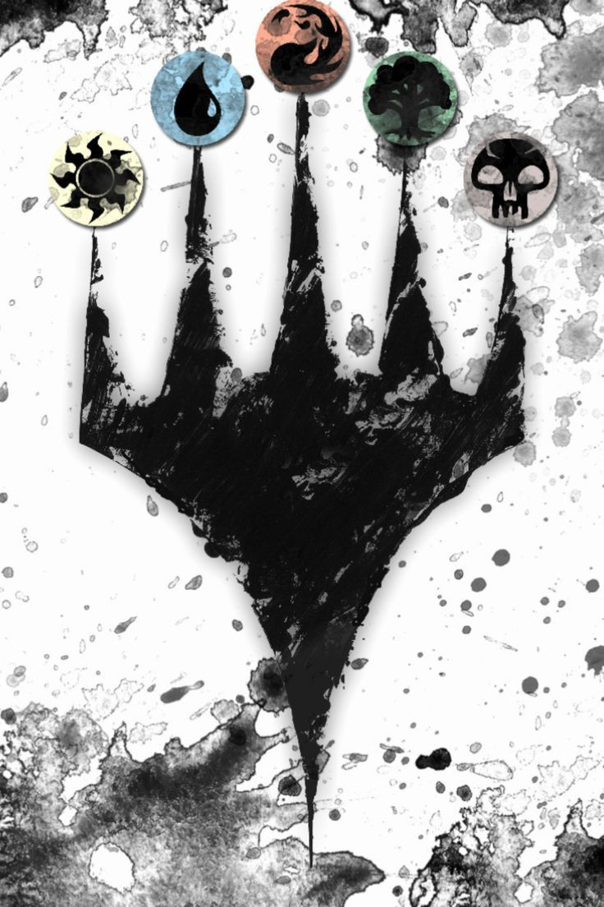

Salut je suis Samuel et je suis une personne merveilleuse. Je suis quelque assez determiner et de motiver, j'aime les jeux vidéos ainsi que les jeux de cartes comme magic ou yhogio. Je commence a m'interesser pour de vrai a Magic laisser moi vous en parler.
Le jeu se distingue par ses milliers de cartes différentes, chaque série apportant de nouvelles mécaniques et histoires. La richesse de son univers permet de créer des combinaisons presque infinies et de développer des stratégies toujours renouvelées. Que vous soyez attiré par l'aspect compétitif des tournois ou par le plaisir de construire des decks personnalisés avec vos amis, Magic offre une expérience profonde et captivante.
Dans Magic, chaque joueur incarne un "planeswalker", un puissant mage capable de voyager à travers des dimensions variées. Les joueurs s'affrontent en utilisant des decks composés de cartes représentant des sorts, des créatures, des artefacts et des enchantements. L'objectif est de réduire les points de vie de votre adversaire à zéro, tout en utilisant stratégie et tactique pour tirer parti de vos cartes et contrecarrer les plans de votre opposant.
Je serai une autre chose que j'adore faire est de jouer aux jeux video, c'est l'un de mes passe temps préférer
meme un peu trop je me rammasse a trop procrastiner, mais je suis quelqu'un qui fais des effort pour s'accomplir, donc vous allez
me voire arriver.